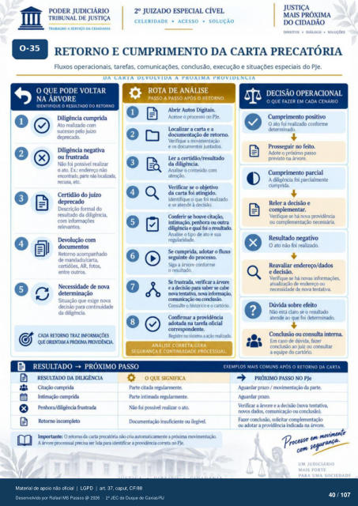

Transcrição automática em português, ainda não revisada. Confira grafia, prazos e termos jurídicos na imagem e no PDF antes de utilizar.
TRABALHO A SERVIÇO DA CIDADANIA
CELERIDADE • ACESSO • SOLUÇÃO
DIREtros • DIÁLOGO • SOLUÇÕES 0-35
RETORNO E CUMPRIMENTO DA CARTA PRECATÓRIA
Fluxos operacionais. tarefas, comunicações. conclusão, execução e situações especiais do PJe.
DA DEVOLVIDA A VKOXIMA PROVIDENCIA
O QUE PODE VOLTAR
NA ÁRVORE
IDENTIFIQUE O DO RETORNO
X Diligência cumprida
Ato realizado com sucesso pelo juízo
Diligêrú negativa ou frustrada
Não foi possivel realizar 0 ato. Ex.: erulereço
pte recusa, etc.
Certidão do juízo Descrição formal do
resultado da diligência, com
relevantes. Ikvolução com
dcxumentos Retorno
mandado/carta. AR, f(flos,
entre outr(K Necessidade de nova
Situação que exige nova para continuidade
da diligência.
CADA RETORNO TRAZ INFORMAÇÕES
WEORIENTAMAPROXIMAPROVIDÊNCIX
ROTA DE ANÁLISE
PASSO A PASSO Após O RETORNO Abrir Autos Digitais.
Acesse o prcresso PJe. a carta e a
documentação de retorno. Verifique a movirnentaçào
e os dcxurnentos juntados Inr a certidão/resultado
da diligência. Analise o conteúdo com
atenção. Verificar se 0 «*t'ivo
da carta foi atingido. 0 que foi realizado
e se atende à decisão. Conferir se houve
intimação, Ou outra clfligérwia e qual 0 resultado.
Analise o tip ato e sua Se cumprida. adotar 0 fluxo
seguinte do prtxesso. Siga a árvore cmforme
o resultzh fnstrú, verificar a
e a ckcisü) para salpr cal* nova tentativa. ruwa
comunicação ou curlusào. Consulte o histórico e o cartório
Confirmar a providência adotada na tarefa oficial
Registre sistema a reartzaia
ANALISE CORRETA GERA
SEGURANÇA E CONTINUIDADE PROCESSUAL.
DECISÃO OPERACIONAL
O QUE FAZER EM CADA CENÁRIO
Cumprimento positivo O ato foi realizado conforme
determinado. Adote o próximo passo
previsto na árvore. Cumprimento parcial
A diligência foi parcialmente cumprida.
Reler a e complementar.
Verifique se há nova providência ou necessária.
Resultado negativo O ato não foi realizado.
endereq)/dados e decisão.
Verifique se há novas de endereço ou
de nova tentativa Dúvida sobre efeito
Não está claro se o resultkKio aten& ao qtR foi determinado.
ConcltA) ou consulta interna. Em caso de dúvida, fazer
conclusão ao juiz ou consultar a do cartório.
RESULTADO -+ PRÓXIMO PASSO
RESULTAIX) DA DILIGÊNCIA
Cit") curnprida Intim$) cumprida
frustrada Retorno incompleto
OQUE SIGNIFICA
Parte citada regularnwnte. Parte intirnada regularnmte.
Nio foi pssív•el realizar 0 ato. insuficiente ilegível.
Imlxn•tante: O retorno da carta precatória cria automaticarrwnte a pr«úirna movirrentaçàcx A árvore Iltxessual vrecisa pra ickntificar a provickm•ia c«reta no PJe.
EXEMPLOS MAIS COMUNS APOS O RETORNO DA CARTA
PRÓXIMO PASSO NO PJe
Aguardar prazo / movirnentaçào da parte. Aguardar prazo.
Verificar a árvore e a decisão (nova tentativa. novos comunicação ou conclusão).
Fazer conclusü). solkitar complementação adotar a providência indicada na árvore.
p roca; r
UM JUDICIÁRIO
MAIS FORTE
Ver também o infográfico original (página 40)
